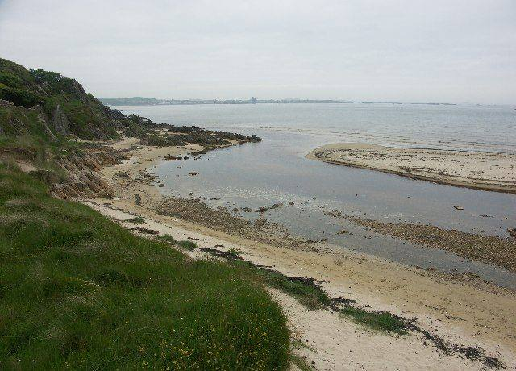
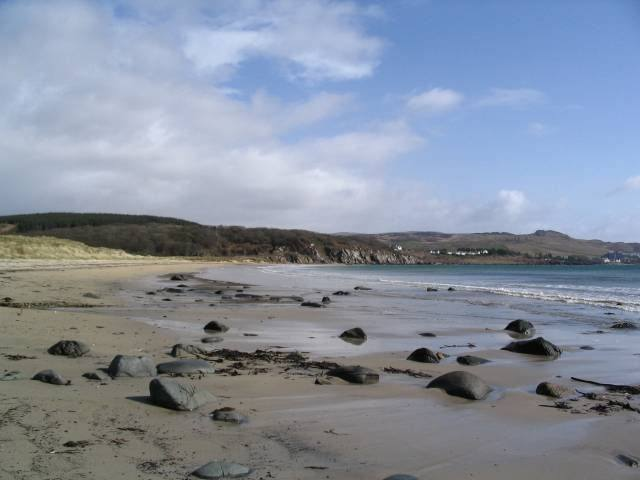
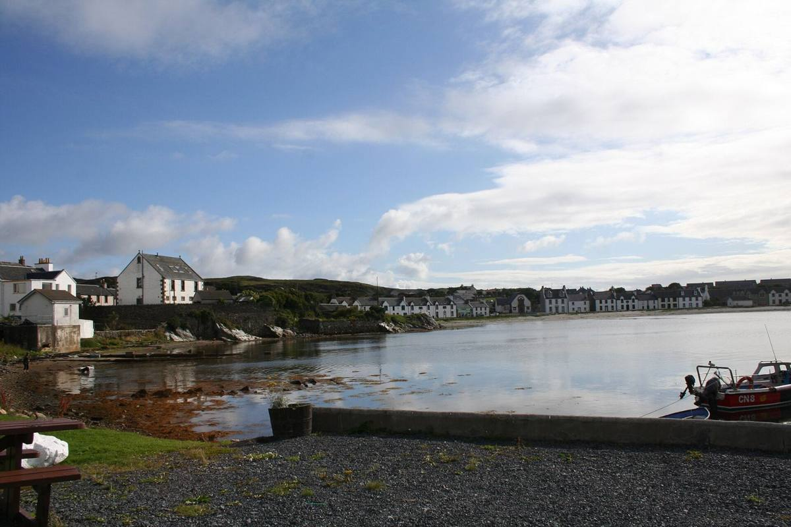

A break from peat without leaving the village. Islay's only rum distillery started distilling in January 2022 in a restored art deco building, the Old Lemonade Factory, on the edge of Port Ellen.
The rum is made in the Caribbean way, with a Scottish twist, in small batches, and it has already picked up awards.
It isn't formally open to the public yet, but they welcome small, informal tours and tastings if you phone ahead. Ask for Ben Inglis, the head distiller.
Islay Rum on Explore Islay & Jura →Dealbhan · Pictures
What it looks like



Photographs from Wikimedia Commons: Andi Scharfstein, CC BY 3.0; J M Briscoe, CC BY-SA 2.0; Lesley Smith, CC BY-SA 2.0; Andrew Wood, CC BY-SA 2.0. Prices are 2026 figures in pounds, with rand at £1 = R22.19. Check before booking.